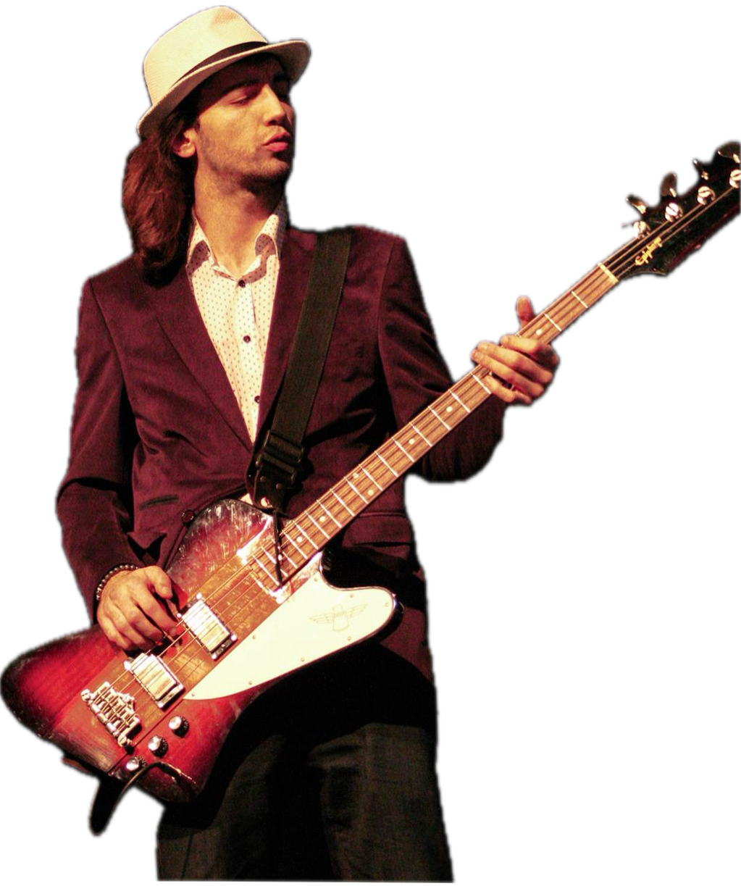

Bassist · Songwriter · Performer
A synthwave musician
with a coder's precision.
I've been playing for over a decade - bass first, then whatever the song needed. On stage I lead the low end; off stage I write, arrange, and produce.

Artist story
How I got here, honestly.
I started playing in my teens. Picked up bass because the low end felt like where the song actually lives - and I haven't stopped since. Over the years I've played with bands and solo projects, in small venues and bigger rooms, and in a few countries.
Music taught me things engineering can't: reading a room, listening to people who are better than you, and shipping something imperfect in front of a live audience. Those lessons come with me into everything I build.
Right now I'm writing and producing in a synthwave direction - melodic, groove-first, a little cinematic. I'm interested in the intersection of retro textures and modern rhythm.
What I play
Genres
Comfort zones
Milestones
Some moments along the way.
High-level markers. The full story is longer and messier - which is how it should be.
First bands, first stages
Started playing bass in school-era bands. Learned to play by ear and by gigging - still my favorite school.
Live years
Regular gigging across bars, venues, and campus shows. Hundreds of hours on stage that taught me more than any textbook.
Studio sessions and collaborations
Featured bass work, collaborations with other musicians and producers, and deeper work on arrangement and tone.
Writing my own material
Moved from playing other people's songs to writing and producing original work. Now mostly in a synthwave-leaning direction.
Ongoing
Writing, producing, performing when the project is right. Open to collaborations with thoughtful people.
Selected works
Listen and watch.
Links will land here as material is ready to share publicly.
Press, features & collaborations
Where the music has shown up.
A growing list. Reach out if you've featured or collaborated and want to be listed here.
- Live shows — multi-year touring circuit across clubs, bars, and festival stages.
- Studio collaborations — featured bass and session work for other artists and independent producers.
- Cross-discipline projects — music paired with technical side projects (e.g. Chordy, a Spotify-chord Android app).
- Ongoing — original synthwave writing and production, releases planned.